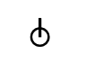
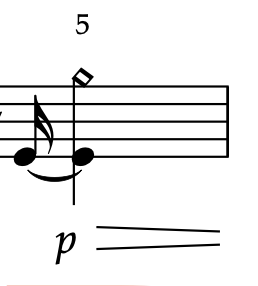
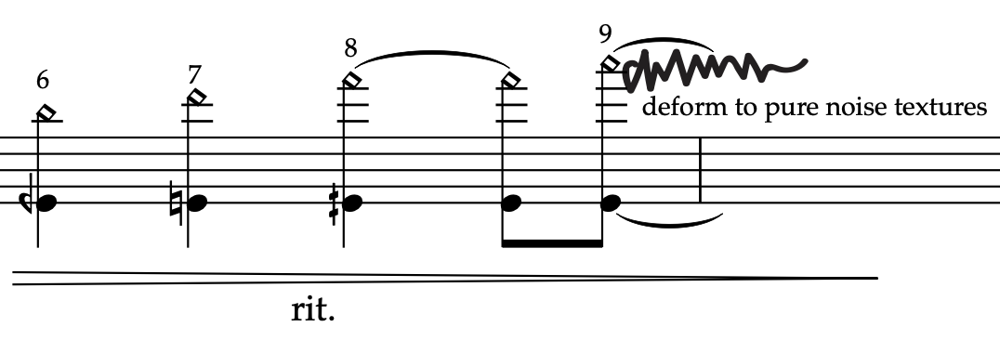
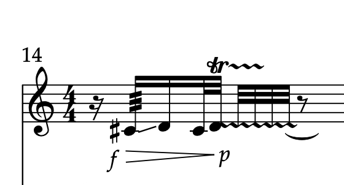
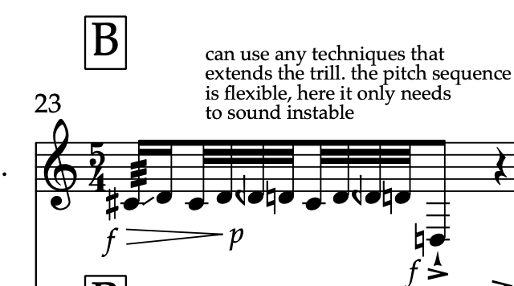
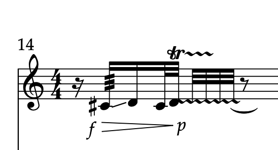
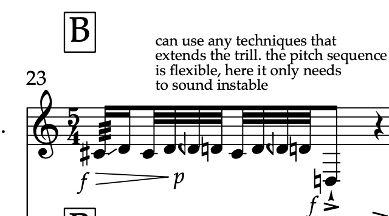

4-01 free cookies updates
Clarinet Q/A for Adam
- Bar 1 : end of third beat is a slap! The top symbol means a slap tone and is used through the piece

- Bar 2: an arrow as a note head indicating an air sound. Whenever you see this notehead it's an air sound

The wavy line is still part of an air noise, not a gliss. I want it to transition from a continuous to a more discrete line.
Maybe this is too confusing? I can take it out in the updated score.
- Bar 3: bar 3 and bar 15 are exactly the same sound with same noise textures. The only difference is that bar 15 will extend the sound
and will need to blend with guitar part playing a same pitch.
For you question about which fundamental to use: I thought the pitch can be produced from a fundamental between C-E on bass clarinet, but I probably was wrong.
See audio example for the correct pitch and noise texture reference.
Sorry the current notaion symbols for bar13 and bar15 are different, which is very confusing. I will revise and make sure to be
consistant.


Please suggest a way to indicate noise texture and pitch content for this specific
sound. which notation you would prefer, the one in bar 3 or bar 15?
and let me know if there's any issues producing a simialr sound result
- the end of bar 3 to bar 4
The harmonic notation is probably wrong as I'm not sure how to notate the exact pitch events.
But in general, I just wanted an ascending overtone sequence here. Maybe it's not a good idea to
indicate partial numbers on the top, so I'll take it out in next score.


For your reference, this is
the kind of sound result that I'm looking for. You can change to a different fundamental if you want.
I thought a fundamental range betwen low C-E would fit here, but I'm open to your interpretation.
- Bar 6: if quarter flat + trilling isn’t possible, no worries, you can leave it out and replace with any other techniques that can slightly extend the note.
the main idea of this measure is to extend the idea you already played from measure 1. In other words, bar 6 only needs to be longer than bar 1. You can choose
any playing techniques as you see can fit. Bar 6, bar 14 and bar 23 are variations of the same sound idea from bar 1.
So if there's anything difficult to achive, as long as you make connections betwen these four repetitions. it will make musical sense in the piece.

 



as you can see they all connect to the sound idea from measure 1, but with slightly different characristics.
- Bar 9: this sound is very flexible. if the indicated range is too soft, feel free to switch to a different range
I just wanted to have a bold and violent interuption that stands out from all the other previous sounds and can
take a short break from previous flow.
My reference was this sound that I made with a cracky music stand, but I'm not sure if it's possible
to produce something similar on a bass clarinet. You're welcome to explore and suggest a solution

- Bar 12: Again, it's a flexible sound event. You can listen to the sound exmple
to get more idea of the kind of gesture that i was considering. Yes, you can understand
it as a diminuendo. I'll add more symbols to the score. And in gnereal, any sound that
has a visual notation means they're very flexible and I would like to have as much of your
music personality as possible in those places. They're less tied to the structure, but
function more of a spotlight for highlighting your indivisual music voice. So feel free to
change and invent things that work best for you
- Bar 13: It's a visual notation again, so everything is flexible. But this measure is a kind of imporant moment of the piece and
ideas from this measure will be recalled in later section of the piece. The pitch range is flexible and depends on your creative decicions.
I only had a rough idea about the overall shape and timbre of the sound, not a specific pitch range. you can take any infomation you hear from
the audio example below as reference. Of course, it's not neccessary to replicate the recording, but just so you have a general feeling about this sound.
This is one of the few moments that clarinet and guitar sound need to blend into one as much as possible to bring a happy, positive and
smilely music texture. here are three solutions that I'm thinking:
- Maybe we can consider switiching to a Bb clarinet for this specific sound?
- alternatively we can try to replace the constant glissando with a chromatic scale on bass clarinet and use a E-guitar sound to compensate the gap to make it as smooth as possible?
- or I can make a short sound effect recording to be triggered by a guitar pedal? So we don't worry about this sound anymore.
- Bar 14: note head with arrow means air sound
- Bar 15 : please see previous notes on bar 3. they're the same sound texture. I'll fix the notation with the correct infomation. I'm not exacly sure how to articulate the multiphonic tecnique for this bar. In general, i just wanted a pitched sound with some rough textures. Bar 15 - 17 in both guitar and clarinet, you will primarily work with one tone and only make very small deviation from it. Maybe this can be achived by overblowing? or other way of alternating the timbre.
- Bar 18 : because bar 18, bar 3 and bar 15 are closely related. So if you make any pitch change to previous bars, here I just need an octave lower note to make a contrast. i could write out the pitch and have a text explaining it's flexible and related to previous pitch materials. In short, I would like to have a lower sound to break the flow!
- Bar 20: is it possible to replace it with a fast ascending scale? or some kind of pitch bending? It's ok to not be a constant gliss. this sound gesture is imporant tho because it will repeat in later sections. So it would be great to find a solution for bar20. Let me know your thoughts. This is a reference sound to consider:
- Bar 24: feedback received ! I will indicate a relative range of keyclicks. For you information, bar 24 is flexible (you can use slap tone, or click sounds) i just need three indivisual percussive sounds in a decreased dynamic sequence such as pp => ppp => pppp (or it can be louder, p => pp => ppp)
Whenever you see small fragments of percussive sound, they're representations of a clicking motion, which we all love to do in our daily digital life. Clicking is an imporant concpet for the piece because we're essentially building up a story between cookies and clicks. So as long as there's click sound produced, the specific Whenever there's click action and click sound appear in the piece, the actual content can be very flexible. You can play anything you like as long as it makes sense in this context. again, i will make the intention more clear in next score
- Bar 27: I'm sorry, maybe t t t t t t t t is not a correct way to notate this. But I just want to add a syllable to the air sound so that it can add some pecussive attack quality to the texture. see sound example here:
please suggest a better way to indicate this sound.
- Bar 49: yes I'll make a symbol for this. Just so you know, the syllable used here is the same as bar 27.
- Bar 53: yes this symbol will be included and explained in an additional page with all the other symbols.
- Bar 56: the weavy line indicates a slight timbre color change. You can apply any technique bisb or trill as you see fit here.
- Bar 61: I stacked two notes to indicate the range of a sliding scale. I think it's just a normal gliss sound without multiphonics probably. I don't know the fingering since I used a pre-recorded solo instrument sound libary by IRCAM The specific sound source i used was called 'Clarinet Glissando Menu'. I also played with its stretch parameter to slow down the gliss so that the pitches sound more discreate.

For the last beat of Bar 61, play this sound example for reference.
- Bar 64: Please let me know what would be the best way to notate this. I think this is from the same gliss menu as Bar 61, but I also played with it by changing both speed and dynamic parameters.
here is the sound example :
- Bar 65: OK! i'll just write vib and check the symbols!
Because this sound is a little different from previous keyclicks since there's a sustained pitch playing at the same time, so I wasn't sure if i should use x as note head to write out all the keyclicks sound since they're kind of like accidental effects produced by alternating the pitch color. This exact sound effect will be repeated later in Bar 75, so i just made a visual to represent these two sounds. Let me know if you have a better notation suggestions!
- Bar 69: OK ! I'll only use symbols for this bar!
- Bar 71: this is a new sound material.it’s a percussive attack but with some harmonic pitches, I'm not exactly sure how to notate it. i thought it’s a combination of slap tone and harmonic sound, so i used x as note head for indicating percussive action with slap tone symbol. It sounds like this:
- Bar 74 : I don't have a clarinet sound example for this bar. But I have something similar from guitar. The unstable pitch sound can be very flexible, I just need one tone with some fluctuated trace.
- Bar 76 : noteheads with a line through are indeterminate pitched sound and gesture extension. I have a suggested pitch written, but they can be changed.
This type of sound also need to connect to and extend the guitar gesture. In bar 76, because there will be a slight overlap between guitar and clarinet. so I'd like to have a clarinet pitch that can blend into the e-guitar gesture. But since there's flexible element from the guitar side, so I put a line in the notehead to indicate it as a variable and need to coordinate with guitar. Once you and Christian settled on a performance solution for this bar, I can also write a fixed pitch on the score.
- Bar 80: ok! I'll just write Faster!
- Bar 87: it's very flexible again. It's a new sound material and a highlight moment for clarinet so I used a visual graphic to represent this sound. the noteheads in the bottom indicate beats. I was thinking about this kind of sound that has a clear momentum :
You can invent something new or take rhythmic reference from the sound example. It's not neccessary to reproduce the exact sound as the recording, as long as you insert some percussive energy here.
- From bar 93: yes! I can leave it completely free to you to improvise and play with each other. I was just wondering if I need to give some abstract directions at least. For the last part about autonomous cookies, everything is very free and will be based a lot on your improvisations. I only set up some rubrics in this section, which you're welcome to extend and develop further as you like. (if you decide to add more materials from bar 93, all these bar numbers will change) -
In general, for autonomous cookies, I just wanted to gradually build up a counterplay between clarinet and guitar as if a game so that the rhythmic pattern will constantly be fragmented, accelerated and intensified to a highly chaotic soundscape with many mechanical clicking sounds. I would suggest using the materials in the score and sound demo as a start. We'll go beyond and make this part more interesting and dramatic.
- Bar 99: it's a very fast percussive sound fragment, which I was not sure how to fit into the measure. So I wrote it by hand. It sounds like this: let me know if there's better way to notate this with symbols.
This sound is another variation of click sound and at the moment of the piece, the clicks has reached its maximum autonomy and mechanisation. So it's a very fast percussive gesture.
Since there are quite a lot of different click sound variations and most of them involve some kind of keyclick actions. So I was thinking that maybe we could also try to attach a contact mic to the instrument later in performance or some microphoning techniques to amplify all clicking action more clearly. More to be disscussed later.
- Bar 100: bubble sound is a variation of previous click sound. Maybe adding air to sound like bubble poping? This is the sound example I was thinking: pitch range is flexible.
- - scribble : no, this does not have a specific meaning. Because there was a short coda initially after bar 126 in my original structure, but I'm not sure if I'll need it so I took it out. I wanted to leave a trace on the page, so that's the birth of the scribble. You don't have to do anything with the scribble, just let it be there. Maybe we'll recycle materials from the autonomous cookies for the coda or maybe the piece will end in bar 126. we can decide later.